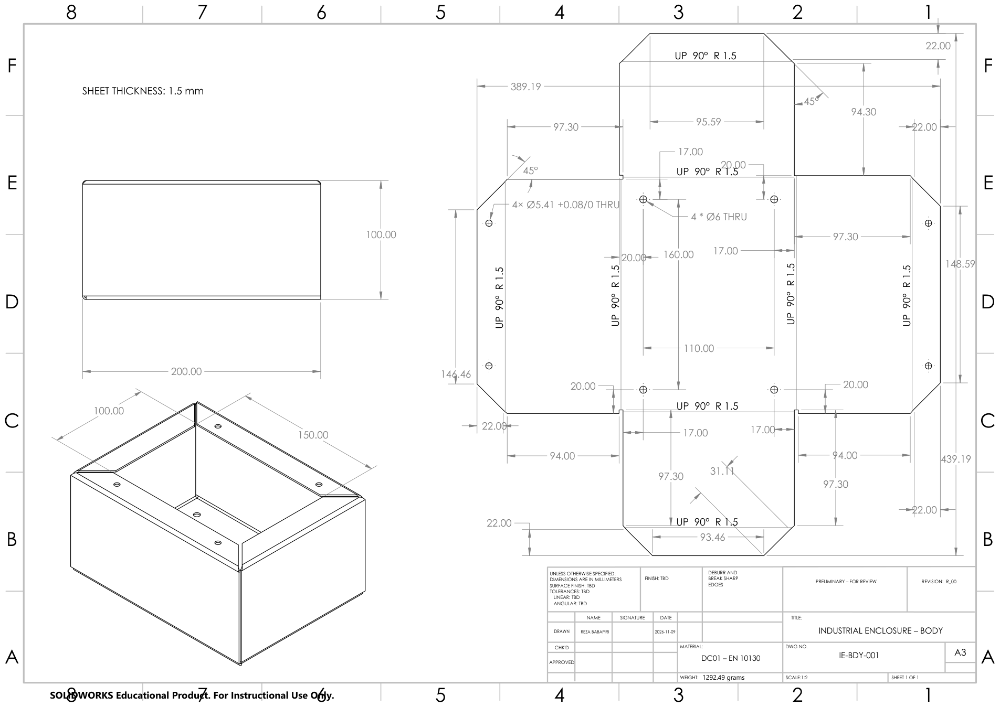
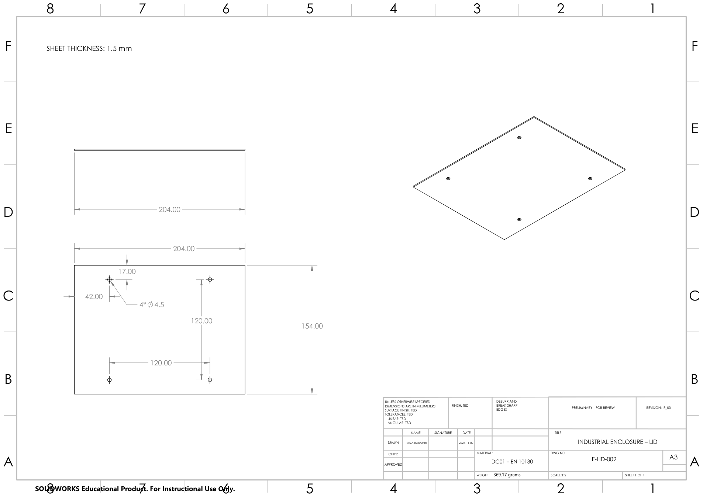

From CAD model to reviewable design package
Designed and documented a 1.5 mm cold-rolled steel enclosure with a detachable lid, using a consistent workflow from sheet-metal features and fastening interfaces through A3 drawings, BOM, flat-pattern DXFs and an exchange STEP assembly.
This is a self-directed CAD documentation exercise. Digital geometry was examined, but the design has not been physically built, tested, certified or released for manufacturing.
Design basis
- Formed housing: nominal 200 × 150 × 100 mm; four wall bends plus four internal top flanges.
- Removable lid: 204 × 154 mm, four Ø4.5 mm clearance holes spaced 120 × 120 mm.
- Base attachment: four Ø6 mm holes on a 160 × 110 mm pattern.
- Hardware: four S-M4-2ZC clinch nuts and four ISO 4762 M4 × 8 socket-head screws.
Engineering workflow
- Developed parametric sheet-metal geometry and flat patterns for the body and lid.
- Assembled body, lid and standard fasteners with an exploded representation.
- Produced separate A3 drawings for the body, lid and assembly, plus a four-item bill of materials.
- Exported 1:1 nominal cutting DXF geometry and a neutral STEP AP214 assembly.
CAD evidence
Preliminary technical sheets generated from the project CAD data. Select a figure to inspect its original drawing representation.



Exchange-file verification
- STEP AP214 export: 10 physical components, digitally reviewed as valid B-rep solids.
- Body DXF bounding size: approximately 439.19 × 389.19 mm; 4 × Ø6 and 4 × Ø5.41 nominal circles.
- Lid DXF: 204 × 154 mm; four Ø4.5 mm circles on 120 × 120 mm pitch.
- Flat-pattern cutting exports omit bend lines intentionally.
Release checks outstanding
Before manufacturing, the exact clinch-nut supplier specification, sheet hardness, hole tolerance and edge distance must be verified. Bend allowance and tooling feasibility, coating, general tolerances, screw engagement and mass-property reconciliation also remain open. The drawings are marked preliminary R_00. Original exports carry educational-license restrictions.